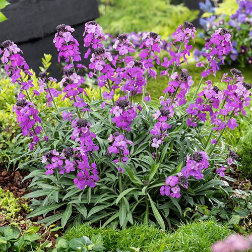

Common Name: Wallflower
Botanical Name: Erysimum
Chinese Name: 糖芥属

Erysimum / Wallflower |

Erysimum / Wallflower |

Erysimum / Wallflower |
|
Other references
RHS
Gardenia
Gardeners' World
Erysimum can be annuals, biennials or woody-based perennials with narrow leaves and dense racemes of often fragrant, 4-petalled flowers。
Spring bedding is synonymous with wallflowers, which make a bright and fragrant accent in beds and borders early in the year, and are discarded after flowering. Less familiar are the perennial wallflowers such as Erysimum ‘Bowles’s Mauve’. This is a beautiful and floriferous, woody-stemmed perennial, bearing masses of mauve flowers on tall spires, for months on end. In southern regions, it flowers all year round.
For best results grow Erysimum ‘Bowles’s’ Mauve’ in moist but well-drained soil, in sun or partial shade. Trim flower stalks as they fade. It’s a short-lived perennial, but is easily replaced with young plants raised from cuttings.
- A superb evergreen perennial with beautiful mauve-purple flowers that carry a lovely light fragrance.
- Flowers over an incredibly long season, from February until October!
- Loved by bees and butterflies and a whole host of other beneficial insects.
- Easy to grow and care for, and an incredible garden performer and great for cut flowers.